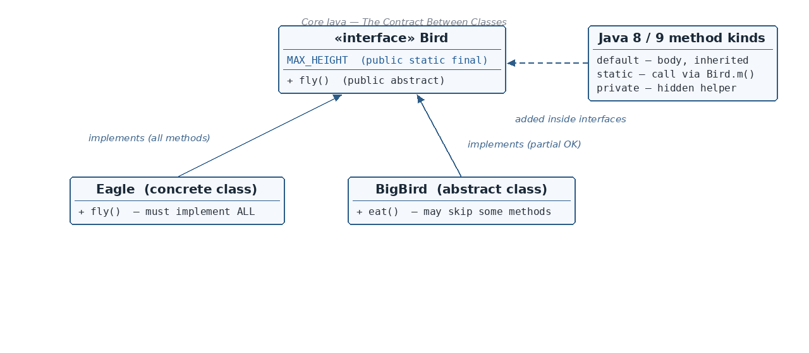

(i) Abstraction
☕ 11 min read · 🎬 Video walkthrough · 📊 UML diagram · 💻 Runnable code
⚡ In a nutshell — What an interface is and how to declare one · The three big things interfaces give us: abstraction, polymorphism, and multiple inheritance · The hidden (implicit) rules for methods and fields inside an interface · The rules a class must follow when it implements an interface
An interface is something that helps two systems talk to each other without one system needing to know the inner details of the other.

Everyday analogy: think of a wall power socket. Your phone charger, laptop, and TV all plug into the same socket shape. The socket is the interface. Your laptop does not care how electricity is produced (coal, solar, wind) — it only cares that the socket gives power in an agreed way. In the same way, a Java interface is an agreed contract: "any class that plugs into me promises to provide these methods."
Because an interface only says what must be done (not how), it helps us achieve abstraction.
An interface declaration is made of five parts:
publicinterface keywordBird{ }public interface Bird extends Interface1, Interface2 {
void fly(); // the body: what every Bird must be able to do
}
Remember: Only
publicand default (package-private) modifiers are allowed on a top-level interface. If you do not write anything, it is default — visible only inside its own package.Remember: An interface extends other interfaces (it can extend many at once):
interface A extends B, C { }. A class implements an interface.
With an interface we can define full (100%) abstraction. We define what a class must do, but not how it will do it. The "how" is left to each implementing class.
An interface can be used as a data type. You see this every day in Java:
List list = new ArrayList<>(); // List is the interface (data type),
// ArrayList is the real object
new List() is illegal).interface Bird { void sound(); }
class Sparrow implements Bird {
public void sound() { System.out.println("Chirp"); }
}
class Crow implements Bird {
public void sound() { System.out.println("Caw"); }
}
public class Main {
public static void main(String[] args) {
Bird b = new Sparrow(); // same variable type...
b.sound(); // runs Sparrow's version
b = new Crow(); // ...now points to a different class
b.sound(); // runs Crow's version
}
}
Output:
Chirp
Caw
A Java class cannot extend two classes, but a class can implement many interfaces. So multiple inheritance is possible in Java only through interfaces.
interface CanSwim { void swim(); }
interface CanFly { void fly(); }
class Duck implements CanSwim, CanFly { // inherits from BOTH contracts
public void swim() { System.out.println("Duck swims"); }
public void fly() { System.out.println("Duck flies"); }
}
public class Main {
public static void main(String[] args) {
Duck d = new Duck();
d.swim();
d.fly();
}
}
Output:
Duck swims
Duck flies
public — even if you don't write public, Java adds it for you. You cannot make them anything less visible.final. (A final method can never be overridden — but the whole point of an interface method is that classes will override it. The two ideas contradict each other.)public interface Bird {
void fly(); // Java secretly reads this as: public abstract void fly();
// final void eat(); // COMPILE ERROR — final is not allowed
}
public static final — in other words, a CONSTANT.private or protected.final, you must give it a value immediately, and nobody can change it later.public interface Bird {
int MAX_HEIGHT = 2000; // Java reads this as: public static final int MAX_HEIGHT = 2000;
}
class Test {
public static void main(String[] args) {
System.out.println(Bird.MAX_HEIGHT); // accessed via interface name, like any constant
// Bird.MAX_HEIGHT = 5000; // COMPILE ERROR — it is final
}
}
Output:
2000
public, so the class's version must also be public. (You cannot "shrink" visibility.)interface Bird {
void fly();
void eat();
}
// Abstract class: allowed to implement only SOME methods
abstract class BigBird implements Bird {
public void eat() { System.out.println("Eats a lot"); }
// fly() is not implemented — OK, because the class is abstract
}
// Concrete class: MUST finish the job
class Eagle extends BigBird {
public void fly() { System.out.println("Eagle flies high"); }
}
public class Main {
public static void main(String[] args) {
Eagle e = new Eagle();
e.eat();
e.fly();
}
}
Output:
Eats a lot
Eagle flies high
A nested interface is an interface declared inside something else. There are two kinds:
Why do this? Generally it is used to group logically related interfaces together — the nested one only makes sense in the context of the outer one.
Rules:
public (it is public implicitly).private, protected, public, or default).public class Bird {
// nested inside a class -> any modifier is allowed (public here so others can use it)
public interface NonFly {
void canRun(); // implicitly public abstract
}
}
// We refer to it with the OuterName.InnerName syntax:
class Ostrich implements Bird.NonFly {
public void canRun() {
System.out.println("Ostrich runs fast!");
}
}
class Main {
public static void main(String[] args) {
Bird.NonFly ostrich = new Ostrich(); // nested interface used as a data type
ostrich.canRun();
}
}
Output:
Ostrich runs fast!
abstract — Keyword used is interfaceextends — Child classes use the keyword implementsdefault, static, and — from Java 9 — private methods with implementation)public static final)public (Java 9 added support for private methods)abstract keyword, and it can be protected, public, or default — No keyword is needed to make a method abstract — it is abstract and public by defaultRemember: Use an abstract class when related classes share common code and state. Use an interface when unrelated classes just need to promise the same behaviour.
Before Java 8, an interface could have only abstract methods, and every child class had to implement all of them.
Now imagine an interface that is already implemented by 500 classes in old (legacy) code. If you add one new abstract method to it, all 500 classes suddenly break — each must be edited to implement it!
The fix: Java 8 added the default method — a method with a body inside an interface. Implementing classes get it for free and do not have to override it.
public interface Bird {
default int getNumber() {
return 10;
}
}
class Eagle implements Bird {
// No need to implement getNumber() — we inherit the default body.
}
class Main {
public static void main(String[] args) {
Bird b = new Eagle();
System.out.println(b.getNumber());
}
}
Output:
10
Remember: Real-world example — the
stream()method was added to theCollectioninterface in Java 8 as a default method, so that every existing collection class (ArrayList, HashSet, ...) got streams without any of them being rewritten.
What if a class implements two interfaces that both have the same default method? Java gets confused — which body should it inherit?
LivingThing / (common idea)
/ \
Bird Animal <-- BOTH have: default boolean canBreathe()
\ /
Eagle <-- implements Bird, Animal ... which one wins??
This diamond-shaped picture is why it is called the diamond problem.
public interface Bird {
default boolean canBreathe() { return true; }
}
public interface Animal {
default boolean canBreathe() { return true; }
}
public class Eagle implements Bird, Animal {
}
// COMPILE ERROR: Eagle inherits unrelated defaults for canBreathe()
Fix — the class overrides the method itself, removing the confusion:
public class Eagle implements Bird, Animal {
public boolean canBreathe() { // Eagle's own version — ambiguity gone
return true;
}
}
// This works.
Instead of two separate parents, put the default method in one shared parent interface — then there is no clash. The notes show three variations:
Way 1 — Child interface simply inherits the default:
public interface LivingThing {
default boolean canBreathe() { return true; }
}
public interface Bird extends LivingThing {
// says nothing about canBreathe()
}
public class Eagle implements Bird {
// Nothing to do — Eagle gets canBreathe() from LivingThing. Works fine.
}
Way 2 — Child interface re-declares the method as abstract (this "cancels" the default!):
public interface LivingThing {
default boolean canBreathe() { return true; }
}
public interface Bird extends LivingThing {
boolean canBreathe(); // re-declared abstract: the default body is thrown away
}
public class Eagle implements Bird {
}
// COMPILE ERROR — does NOT work! Eagle must now implement canBreathe() itself:
public class Eagle implements Bird {
public boolean canBreathe() { return true; } // now it works
}
Way 3 — Child interface overrides the default with a NEW default body:
public interface LivingThing {
default boolean canBreathe() { return true; }
}
public interface Bird extends LivingThing {
default boolean canBreathe() { // new default implementation
System.out.println("Hello");
return true;
}
}
public class Eagle implements Bird {
// Works — Eagle inherits Bird's version (the most specific one wins).
}
static methods with a body inside an interface.Bird.canBreathe().public by default.public interface Bird {
static boolean canBreathe() {
return true;
}
}
public class Eagle implements Bird {
public void digestive() {
if (Bird.canBreathe()) { // called via the INTERFACE name
System.out.println("Digesting food...");
}
}
}
class Main {
public static void main(String[] args) {
new Eagle().digestive();
}
}
Output:
Digesting food...
Java 9 lets an interface have private and private static methods — helper methods with a body, hidden from the outside world.
All the rules from the notes:
private access modifier.default methods share some common steps, put those steps in one private method.This one interface shows every kind of interface method living side by side:
public interface Bird {
void canFly(); // equivalent to: public abstract void canFly()
// Java 8: default method — has a body, inherited by implementing classes
public default void minimumFlyingHeight() {
myStaticPublicMethod(); // a default method CAN call a static method
myPrivateMethod(); // ...and a private method
myPrivateStaticMethod(); // ...and a private static method
}
// Java 8: public static method — called as Bird.myStaticPublicMethod()
static void myStaticPublicMethod() {
myPrivateStaticMethod(); // static may call only private STATIC helpers
}
// Java 9: private (non-static) helper — usable only inside this interface
private void myPrivateMethod() {
System.out.println("private helper");
}
// Java 9: private static helper — callable from static AND non-static methods
private static void myPrivateStaticMethod() {
System.out.println("private static helper");
}
}
class Eagle implements Bird {
public void canFly() { // the one abstract method we MUST implement
System.out.println("Eagle can fly");
}
}
class Main {
public static void main(String[] args) {
Bird eagle = new Eagle();
eagle.canFly();
eagle.minimumFlyingHeight();
}
}
Output:
Eagle can fly
private static helper
private helper
private static helper
interface keyword + name + optional parent interfaces + body. Only public/default modifiers allowed on top-level interfaces.new an interface, but an interface variable can hold any implementing class — that is polymorphism (List list = new ArrayList<>();).public abstract (never final); fields are implicitly public static final constants.Outer.Inner.default methods let old interfaces grow without breaking legacy classes (e.g. stream() in Collection); resolve the diamond problem by overriding the clashing method.static methods: called on the interface name, cannot be overridden.private / private static methods: hidden helpers for shared code inside the interface only; they must have a body.👏 Found this useful? Give it a few claps so more developers discover it, and follow for the whole series — every article ships with a UML diagram, runnable code, a narrated video, and a companion PDF. Happy building! 🚀